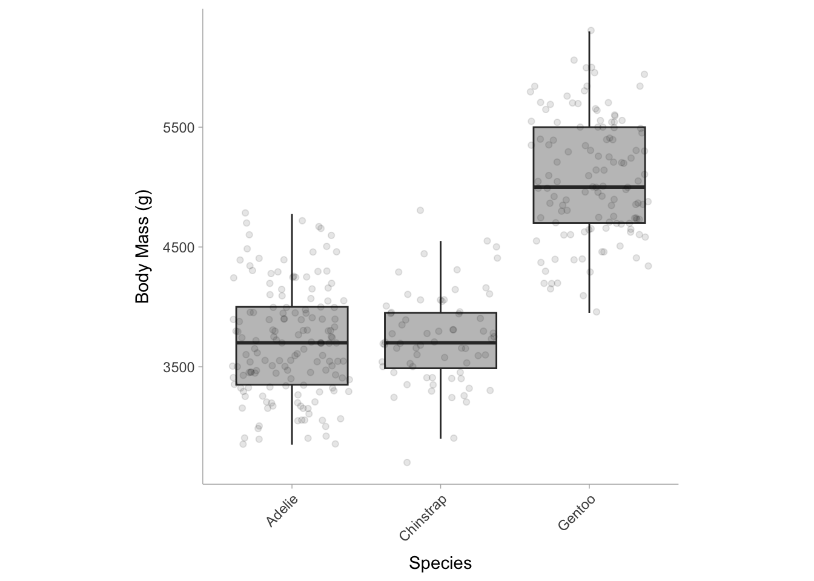
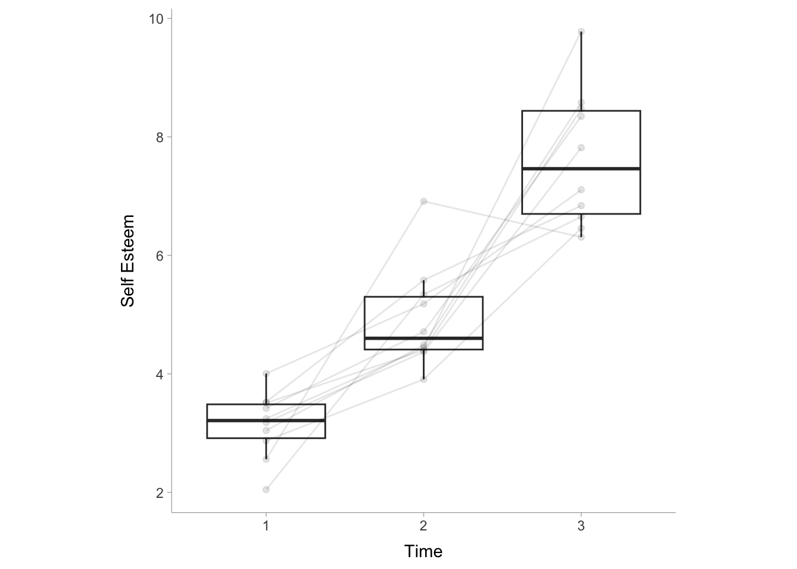
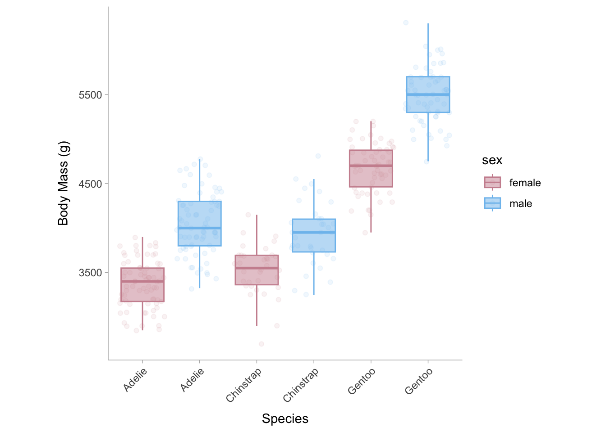
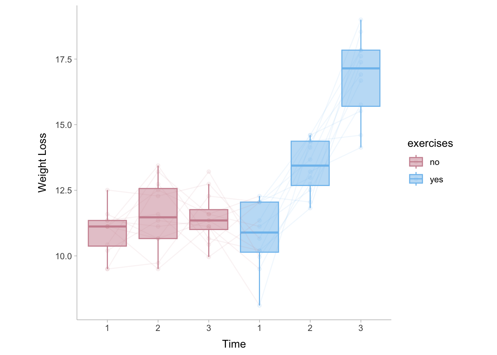

For ANOVAs/F-tests, you will always need to report two kinds of effects: the omnibus effect of the factor(s) and the effect of planned contrasts or post hoc comparisons.
For instance, imagine that you are comparing three groups/conditions with a one-way ANOVA. The ANOVA will first return an F-statistic, the degrees of freedom, and the associated p-value. Here, you need to calculate the size of this omnibus factor effect in eta-squared, partial eta-squared, or generalized eta-squared.
Suppose the omnibus effect is significant. You now know that there is at least one group that differs from the others. You want to know which group(s) differ from the others, and how much they differ. Therefore, you conduct post hoc comparisons on these groups. Because post hoc comparisons compare each group with the others in pairs, you will get a t-statistic and p-value for each comparison. For this, you can calculate and report a standardized mean difference.
Imagine that you have two independent variables or factors, and you conduct a two-by-two factorial ANOVA. The first thing to do then is look at the interaction. If the interaction is significant, you again report the associated omnibus effect size measures, and proceed to analyze the simple effects. Depending on your research question, you compare the levels of one IV on each level of the other IV. You will report d or g for these simple effects. If the interaction is not significant, you look at the main effects and report the associated omnibus effect. You then proceed to analyze the main effect by comparing the levels of one IV while collapsing/aggregating the levels of the other IV. You will report d or g for these pairwise comparisons. Note that lower-order effects are not directly interpretable if higher-order effects are significant. If you have a significant interaction in a two-way ANOVA, you cannot interpret the main effects directly. If you have a significant three-way interaction in a three-way ANOVA, you cannot interpret the main effects or the two-way interactions directly, regardless of whether they are significant or not.
10.2 ANOVA tables
An ANOVA table generally consists of the grouping factors (+ residuals), the sum of squares, the degrees of freedom, the mean square, the F-statistic, and the p-value. Using base R, we can construct an ANOVA table using the aov() function to generate the ANOVA model and then using summary.aov() to extract the table. For an example case, we will use the palmerpenguins data set package and we will investigate the differences in the body mass (the outcome) of three penguin species (the predictor/grouping variable):
library(palmerpenguins)# construct anova model # formula structure: outcome ~ grouping variableANOVA_mdl <-aov(body_mass_g ~ species, data = penguins) # datasetANOVA_table <-summary.aov(ANOVA_mdl)ANOVA_table
Df Sum Sq Mean Sq F value Pr(>F)
species 2 146864214 73432107 343.6 <2e-16 ***
Residuals 339 72443483 213698
---
Signif. codes: 0 '***' 0.001 '**' 0.01 '*' 0.05 '.' 0.1 ' ' 1
2 observations deleted due to missingness
By default, summary.aov() does not report the \(\eta^2\) value, however we will discuss this more in Section 10.7.1. The results show that the mean body mass between the three penguin species (Adelie, Gentoo, Chinstrap) differ significantly from one another.

10.3 One-way between-subjects ANOVA
One-way between-subject ANOVA is an extension of independent-samples t-tests. The null hypothesis is that all k means of k independent groups are identical, whereas the alternative hypothesis is that there are at least two means from these k groups differ. The assumptions include: (1) independence of observations, (2) normality of residuals, and (3) equality (or homogeneity) of variances (homoscedasticity).1
Note. Sometimes you may encounter a between-subject one-way ANOVA which compares only two conditions, particularly when the paper is old. This is essentially a t-test, and the F-statistic is just t-squared. It is preferable to report Cohen’s d for these tests. If you are calculating the effect size for such tests, it’s best to calculate Cohen’s d, or convert the provided eta-squared to Cohen’s d, as Cohen’s d can show the direction of the effect. Subsequent analyses (e.g., power analysis) can also be based on Cohen’s d.
It’s very easy to determine eta-squared with an F-statistic and the two degrees of freedom from a one-way ANOVA 2. Note that in the case of a one-way between-subject ANOVA, eta-squared is equal to partial eta-squared.
10.3.1 Determining degrees of freedom
Please refer to the following table to determine the degrees of freedom for ANOVA effects, if they are not reported or if you are doubtful that they have been misreported.
Degrees of freedom
Between subjects ANOVA
Effect
\(k-1\)
Error
\(n-k\)
Total
\(n-1\)
10.3.2 Calculating eta-squared from F-statistic and degrees of freedom
Using the formula below, we can calculate \(\eta^2\) of an ANOVA model using the F-statistic and the degrees of freedom,
\[
\eta^2 = \frac{df_\text{effect}\times F}{df_\text{effect} \times F + df_\text{error}}.
\]
library(effectsize)n =154# number of subjectsk =3# number of groupsf =84.3# F-statisticdf_effect = k -1df_error = n - kF_to_eta2(f = f,df = df_effect,df_error = df_error,alternative ='two.sided') # obtain two sided CIs
Eta2 (partial) | 95% CI
-----------------------------
0.53 | [0.42, 0.61]
10.3.3 Calculating eta-squared from an ANOVA table
Let’s use the table from the ANOVA model in Section 10.2:
One-way ANOVA table
Df
Sum Sq
Mean Sq
F value
Pr(>F)
species
2
146864214
73432107.1
343.6263
0
Residuals
339
72443483
213697.6
NA
NA
From this table we can use the sum of squares from the grouping variable (species) and the total sum of squares (\(SS_\text{total} = SS_\text{effect} + SS_\text{error}\)) to calculate the \(\eta^2\) value using the following equation:
In R, we can use the eta.full.SS() function in the MOTE package (Buchanan et al. 2019) to obtain \(\eta^2\) from an ANOVA table.
library(MOTE)eta <-eta.full.SS(dfm =2, # effect degrees of freedomdfe =339, # error degrees of freedomssm =146864214, # sum of squares for the effectsst =146864214+72443483, # total sum of squaresFvalue =343.6263,a = .05)data.frame(eta_squared =apa(eta$eta),etalow =apa(eta$etalow),etahigh =apa(eta$etahigh))
eta_squared etalow etahigh
1 0.670 0.606 0.722
The example code outputs \(\eta^2\) = .67 [.61, .72]. This suggests that species accounts for 67% of the total variation in body mass between penguins.
10.3.4 Calculating Cohen’s d for post-hoc comparisons
In an omnibus ANOVA, the p-value is telling us whether the means from all groups come from the same population mean, however this does not inform us about which groups differ and by how much. Using the same example as before, let’s say we want to answer a specific question such as: what is the difference in body mass between Adelie penguins and Gentoo penguins? To answer this question, we can calculate the raw mean difference between the two groups. In R, we can do that with the following code:
Based on the mean difference, Gentoo penguins are on average 1375 grams heavier than Adelia penguins in total body mass. We can also calculate a standardized mean difference using the escalc() function in the metafor package (Viechtbauer 2010).
yi vi sei zi pval ci.lb ci.ub
1 2.8602 0.0295 0.1716 16.6629 <.0001 2.5237 3.1966
The standardized mean difference between Adelie and Gentoo penguins is \(d\) = 2.86 [2.52, 3.19], demonstrating that Gentoo penguins have body mass 2.86 standard deviations larger than Adelie penguins.
We can also quantify contrasts from summary statistics reported from the ANOVA table and the within group means. We can calculate the standardized mean difference using the means from both groups and the mean squared error (\(MSE\)) the following equation:
\[
d = \frac{M_1 - M_2}{\sqrt{MSE}}
\]
This method gives a standardized mean difference equivalent to the Cohen’s \(d\) with the pooled standard deviation in the denominator (see chapter on mean differences). Therefore if we obtain the mean squared errors (i.e., MS of residuals) from Section 10.3.3 and we obtain the means (means: Gentoo = 5076, Adelie = 3701), we can calculate the standardized mean difference as: \(\frac{5076 - 3701}{\sqrt{213697.6}} = \frac{1375}{462.27 } = 2.974\). The discrepency between the standardized mean difference provided by the escalc() function is due to the fact that the function automatically applies a small sample correction factor thus reducing the overall effect.
Df
Sum Sq
Mean Sq
F value
Pr(>F)
species
2
146864214
73432107.1
343.6263
0
Residuals
339
72443483
213697.6
NA
NA
Beware the assumptions.
Note that this method is ONLY valid when you are willing to assume equal variances among groups (homoscedasticity), and when you conduct a Fisher’s one-way ANOVA (rather than Welch’s). This method is also impractical if you are calculating from reported statistics, and MSE is not reported (which is typically the case).
If you are unwilling to assume homogeneity of variances, then calculate Cohen’s d between groups as if there are only two groups for comparison. However, you should know that it also makes little sense to conduct a Fisher’s ANOVA in such situations. You may want to switch to Welch’s ANOVA, which does not assume homoscedasticity. If variances differ greatly, you may want to use alternative standardized effect size measures, such as Glass’ delta, and calculate confidence intervals using bootstrap.
10.4 One-way repeated measures ANOVA
One-way repeated measures ANOVA (rmANOVA) is an extension of paired-samples t-tests, with the difference being it can be used in two or more groups.
10.4.1 Determining degrees of freedom
Please refer to the following table to determine the degrees of freedom for repeated measure ANOVA effects.
Degrees of freedom
Within-subject ANOVA (repeated measures)
Effect
\(k-1\)
Error-between
\((n-1)\times(k-1)\)
Error-within
\((n-1)\cdot (k-1)\)
Total (within)
\(n\cdot (k-1)\)
10.4.2 Eta-squared from rmANOVA statistics
Commonly, we use eta-squared (\(\eta^2\)) or partial eta-squared (\(\eta_p^2\)) as the effect size measure for one-way rmANOVAs, for which these two are in fact equal. Let’s construct an rmANOVA model use example data from the datarium package (Kassambara 2019). The selfesteem data set simply shows self-esteem scores over three repeated measurements within the same subjects.
### load in and re-format datalibrary(tidyr)data("selfesteem", package ="datarium")selfesteem <- tidyr::pivot_longer(selfesteem,cols =c("t1","t2","t3"))colnames(selfesteem) <-c("subject","time","self_esteem")####rmANOVA_mdl =aov(formula = self_esteem ~ time +Error(subject),data = selfesteem)summary(rmANOVA_mdl)
Error: subject
Df Sum Sq Mean Sq F value Pr(>F)
Residuals 1 0.07667 0.07667
Error: Within
Df Sum Sq Mean Sq F value Pr(>F)
time 2 102.46 51.23 63.07 1.06e-10 ***
Residuals 26 21.12 0.81
---
Signif. codes: 0 '***' 0.001 '**' 0.01 '*' 0.05 '.' 0.1 ' ' 1

There are two tables displayed here, the table on top displays the between subject effects and the table below shows the within subject effects.The equations and functions to calculate \(\eta^2\) mentioned in the one-way between-subjects ANOVAs section also apply here:
\[
\eta^2 = \frac{df_\text{effect}\times F}{df_\text{effect} \times F + df_\text{error-within}},
\]
Note that here \(SS_\text{total}\) does not include \(SS_\text{error-between}\) because we are not interested in it by conducting a rmANOVA. This analysis targets an effect that we think should happen on each subject, regardless of how these subjects will vary from each other. In other words, between-subjects variance can be large or small, but we do not care about it when we examine whether there is an effect or not across repeated measures. Therefore the total sum of squares can be defined as
We can plug the rmANOVA model into the eta_squared() function from the effectsize package in R (Ben-Shachar, Lüdecke, and Makowski 2020) to calculate \(\eta^2\).
# Effect Size for ANOVA (Type I)
Group | Parameter | Eta2 (partial) | 95% CI
--------------------------------------------------
Within | time | 0.83 | [0.69, 0.89]
As expected, we find the same point-estimate from our hand calculation. To calculate \(\eta^2\) from the F-statistic and degrees of freedom we can use the MOTE package (Buchanan et al. 2019) as we did in Section 10.3.3
library(MOTE)eta <-eta.full.SS(dfm =2, # effect degrees of freedomdfe =26, # error degrees of freedomssm =102.46, # sum of squares for the effectsst =102.46+21.12, # total sum of squaresFvalue =63.07,a = .05)data.frame(eta_squared =apa(eta$eta),etalow =apa(eta$etalow),etahigh =apa(eta$etahigh))
eta_squared etalow etahigh
1 0.829 0.644 0.910
Note the discrepency between confidence intervals returned by MOTE and effectsize this is due to differences in the calculation.
10.5 Two-Way between-subjects ANOVA
Two-way between-subjects ANOVA is used when there are two predictor grouping variables in the model. Note again that between subjects means that each group contain different subjects.
10.5.1 Determining degrees of freedom
Please refer to the following table to determine the degrees of freedom for two-way ANOVA effects (Morse 2018). Note that \(k_1\) is the number of groups in the first variable, and \(k_2\) is the number of groups in the second variable.
Degrees of freedom
Within subjects ANOVA
Main Effect (of one variable)
\(k_1-1\) or \(k_2-1\)
Interaction Effect
\((k_1-1)\times (k_2-1)\)
Error
\(n-k_1\cdot k_2\)
Total
\(n-1\)
10.5.2 Eta-squared from Two-Way ANOVA statistics
For Two-way ANOVAs we can obtain \(\eta^2_p\) for each predictor in the model. Let’s construct our ANOVA model using data from the palmerpenguins dataset (Horst, Hill, and Gorman 2020). In this example we want to see how the species and the sex of the penguin explains variance in body mass.
library(palmerpenguins)ANOVA2_mdl <-aov(body_mass_g ~ species + sex + species:sex,data = penguins)summary(ANOVA2_mdl)
Df Sum Sq Mean Sq F value Pr(>F)
species 2 145190219 72595110 758.358 < 2e-16 ***
sex 1 37090262 37090262 387.460 < 2e-16 ***
species:sex 2 1676557 838278 8.757 0.000197 ***
Residuals 327 31302628 95727
---
Signif. codes: 0 '***' 0.001 '**' 0.01 '*' 0.05 '.' 0.1 ' ' 1
11 observations deleted due to missingness

The results show that species, sex, and the interaction between the two account for substantial variance in body mass. We can obtain the contributions of species, sex, and their interaction by computing the partial eta-squared value (\(\eta_p^2\)). To do this using similar formulas to \(\eta^2\) from the one-way ANOVAs. The difference between the formulas for \(\eta_p^2\) anf \(\eta^2\) is that \(\eta_p^2\) does not use the total sum of squares in the denominator, instead it uses the residual sum of squares (\(SS_\text{error}\)) and the sum of squares from the effect of interest (\(SS_\text{effect}\); i.e., species or sex but not both). For example,
\[
\small{\text{For species:}\;\;\;\; \eta_p^2= \frac{SS_\text{effect}}{SS_\text{effect} + SS_\text{error}} = \frac{145190219}{145190219+ 31302628} = .82}
\]\[
\small{\text{For sex:}\;\;\;\; \eta_p^2= \frac{SS_\text{effect}}{SS_\text{effect} + SS_\text{error}} = \frac{37090262}{37090262 + 31302628} = .54}
\]\[
\small{\text{For sex}\times\text{species:}\;\;\;\; \eta_p^2= \frac{SS_\text{effect}}{SS_\text{effect} + SS_\text{error}} = \frac{1676557}{1676557+ 31302628} = .05}
\] We can also easily do this in R using the eta_squared function in the effectsize package (Ben-Shachar, Lüdecke, and Makowski 2020) and setting the argument partial = TRUE.
# Effect Size for ANOVA (Type I)
Parameter | Eta2 (partial) | 95% CI
-------------------------------------------
species | 0.82 | [0.79, 0.85]
sex | 0.54 | [0.48, 0.60]
species:sex | 0.05 | [0.01, 0.10]
10.6 Two-way repeated measures ANOVA
A two-way repeated measures ANOVA (rmANOVA) would indicate that subjects are exposed to each condition along two variables.
10.6.1 Determing degrees of freedom
Please refer to the following table to determine the degrees of freedom for two-way rmANOVA effects (Morse 2018). Note that \(k_1\) is the number of groups in the first variable, and \(k_2\) is the number of groups in the second variable.
Degrees of freedom
Between subjects ANOVA
Main Effect (of one variable)
\(k_1-1\) or \(k_2-1\)
Interaction Effect
\((k_1-1)\times (k_2-1)\)
Error-between
\((k_1 \cdot k_2) - 1\)
Error-within
\((n - 1)\times (k_1\cdot k_2 - 1)\)
Total
\(n-1\)
10.6.2 Eta-squared from Two-way rmANOVA
For a two-way repeated measures ANOVA, we can use the weightloss data set from the datarius package (Kassambara 2019). This data set contains a diet condition and a control condition that tracked subjects across time (3 time points) for each of condition.
### load in and re-format datalibrary(tidyr)data("weightloss", package ="datarium")weightloss <- tidyr::pivot_longer(weightloss,cols =c("t1","t2","t3"))colnames(weightloss) <-c("subject","diet","exercises","time", "weight_loss")weightloss <- weightloss[weightloss$diet=='no',] # remove the diet intervention trials####rmANOVA2_mdl =aov(formula = weight_loss ~ time + exercises + time:exercises +Error(subject),data = weightloss)summary(rmANOVA2_mdl)
Error: subject
Df Sum Sq Mean Sq F value Pr(>F)
Residuals 11 20.64 1.877
Error: Within
Df Sum Sq Mean Sq F value Pr(>F)
time 2 129.26 64.63 50.57 3.45e-13 ***
exercises 1 101.03 101.03 79.05 3.16e-12 ***
time:exercises 2 92.55 46.28 36.21 9.26e-11 ***
Residuals 55 70.29 1.28
---
Signif. codes: 0 '***' 0.001 '**' 0.01 '*' 0.05 '.' 0.1 ' ' 1

From the table and graph above, we can see that there is substantial within-person change in weight loss under the exercise condition and no discernible increase in weight loss without exercising. This suggests that there is a substantial interaction effect. Like we did in the between-subjects two-way ANOVA, we can calculate the partial eta squared values from the ANOVA table
Remember for the partial eta-squared, the denominator is not the total sum of squares rather it is the effect sum of squares and the error. In the repeated measures ANOVA, the error should only be for the within subject error because the variance between subjects is not something we are interested about. We can also calculate this in R using the eta_squared() function again.
# Effect Size for ANOVA (Type I)
Group | Parameter | Eta2 (partial) | 95% CI
-------------------------------------------------------
Within | time | 0.65 | [0.49, 0.75]
Within | exercises | 0.59 | [0.42, 0.70]
Within | time:exercises | 0.57 | [0.39, 0.69]
10.7 Effect Sizes for ANOVAs
ANOVA (Analysis of Variance) is a statistical method used to compare means across multiple groups or conditions. It is mostly used when the outcome variable is continuous and the predictor variables are categorical. Commonly used effect size measures for ANOVAs / F-tests include: eta-squared (\(\eta^2\)), partial eta-squared (\(\eta_p^2\)), generalized eta-squared (\(\eta^2_G\)), omega-squared (\(\omega^2\)), partial omega-squared (\(\omega\)), generalized omega-squared (\(\omega^2_G\)), Cohen’s \(f\).
Type
Description
Section
\(\eta^2\) - eta-squared
Measures the variance explained of the whole ANOVA model.
Similar to \(\eta^2\), but uses the sum of squares of all non-manipulated variables in the calculation. This allows meta-analysts to compare \(\eta_G\) across different designs.
Eta-squared is the ratio between the between-group variance and the total variance. It describes the proportion of the total variability in the data that are accounted for by a particular factor. Therefore, it is a measure of variance explained. To calculate eta-squared (\(\eta^2\)) we need to first calculate the total sum of squares (\(SS_{\text{total}}\)) and the effect sum of squares (\(SS_{\text{effect}}\)),
Where \(\bar{y}\) is the grand mean (i.e., the mean of all data points collapsed across groups). To calculate the sum of squares of the effect, we can take the predicted \(y\) values (\(\hat{y}_i\)). In the case of categorical predictors, \(\hat{y}_i\) is equal to the mean of the outcome within that individual’s respective group. Therefore the sum of squares of the effect can be calculated using the following formula:
The sampling distribution for \(\eta^2\) is asymmetric as all the values are bounded in the range, 0 to 1. The confidence interval surrounding \(\eta^2\) will likewise be asymmetric so instead of calculating the confidence interval from the standard error, we can instead use a non-central F-distribution using the degrees of freedom between groups (e.g., for three groups: \(df_b=k-1=3-1=2\)) and the degrees of freedom within groups (e.g., for 100 subjects and three groups: \(df_b=n-k=100-3=97\)) to obtain the confidence intervals. Another option is to use bootstrapping procedure (i.e., resampling the observed data points to construct a sampling distribution around \(\eta^2\), see Kirby and Gerlanc 2013) and then take the .025 and .975 quantiles of that distribution. The R code below will compute the proper confidence interval.
Where \(n\) is the total sample size and \(k\) is the number of predictors. In R, we can calculate \(\eta^2\) from a one-way ANOVA using the penguin data set from the palmerpenguins data package. The aov function in base R allows the analyst to model an ANOVA with categorical predictors on the right side (species) of the ~ and the outcome on the left side (body mass of penguin). We can then use the eta_squared function in the effectsize package to calculate the point estimate and confidence intervals.
# Effect Size for ANOVA (Type I)
Parameter | Eta2 | 95% CI
-------------------------------
species | 0.67 | [0.62, 0.71]
The species of the penguin explains the majority of the variation in body mass showing an eta-squared value of \(\eta^2\) = .67 [.62, .71]. Let us now do the same thing with a two-way ANOVA, using both species and sex as our categorical predictors.
# Example:# group: species and sex# outcome: body mass# Two-Way ANOVAmdl2 <-aov(data = penguins, body_mass_g ~ species + sex)eta_squared(mdl2, partial =FALSE,alternative ="two.sided")
# Effect Size for ANOVA (Type I)
Parameter | Eta2 | 95% CI
-------------------------------
species | 0.67 | [0.62, 0.72]
sex | 0.17 | [0.10, 0.24]
Notice that the \(\eta^2\) does not change for species since the sum of squares is divided by the total sum of squares rather than the residual sum of squares (see partial eta squared). The example shows an eta-squared value for species of \(\eta^2\) = .67 [.62, .72] and for sex \(\eta^2\) = .17 [.10, .24].
10.7.2 Partial Eta-Squared (\(\eta^2_p\))
Partial eta-squared is the most commonly reported effect size measure for F-tests. It describes the proportion of variability associated with an effect when the variability associated with all other effects identified in the analysis has been removed from consideration (hence, it is “partial”). If you have access to an ANOVA table, the partial eta-squared for an effect is calculated as:
In a one-way ANOVA (one categorical predictor), partial eta-squared and eta-squared are equivalent since \(SS_{\text{total}} = SS_{\text{effect}}+SS_{\text{error}}\)
If there are multiple predictors, the denominator will only include the sum of squares of the effect of interest rather than the effect of all predictors (which is the case for the non-partial eta squared).
In R, let us compare the partial eta-squared values for a one-way ANOVA and a two-way ANOVA using the eta_squared function in the effectsize package.
For one-way between subjects designs, partial eta squared is equivalent
to eta squared. Returning eta squared.
# Effect Size for ANOVA
Parameter | Eta2 | 95% CI
-------------------------------
species | 0.67 | [0.62, 0.71]
The species of the penguin explains the majority of the variation in body mass showing a partial eta-squared value of \(\eta^2\) = \(\eta^2_p\) = .67 [.62, .71]. Let us now do the same thing with a two-way ANOVA, using both species and sex as our categorical predictors.
# Example:# group: species and sex# outcome: body mass# Two-Way ANOVAmdl2 <-aov(data = penguins, body_mass_g ~ species + sex)eta_squared(mdl2, partial =TRUE,alternative ="two.sided")
# Effect Size for ANOVA (Type I)
Parameter | Eta2 (partial) | 95% CI
-----------------------------------------
species | 0.81 | [0.78, 0.84]
sex | 0.53 | [0.46, 0.59]
Once we run a two-way ANOVA, the eta-squared value for species begins to differ. The example shows a partial eta-squared value for species of \(\eta^2_p\) = .81 [.78, .84] and for sex \(\eta^2\) = .53 [.46, .59].
10.7.3 Generalized Eta-Squared (\(\eta^2_G\))
Generalized eta-squared was devised to allow effect size comparisons across studies with different designs, which eta-squared and partial eta-squared cannot help with (refer to for details). If you can (either you are confident that you calculated it right, or the statistical software that you use just happens to return this measure), report generalized eta-squared in addition to eta-squared or partial eta-squared. The biggest advantage of generalized eta-squared is that it facilitates meta-analysis, which is important for the accumulation of knowledge. To calculate generalized eta-squared, the denominator should be the sums of squares of all the non-manipulated variables (i.e., variance of purely individual differences in the outcome rather than individual differences in treatment effects). Note the formula will depend on the design of the study. In R, the eta_squared function in the effectsize package supports the calculation of generalized eta-squared by using the generalized=TRUE argument.
Similar to Hedges’ correction for small sample bias in standardized mean differences, \(\eta^2\) is also biased. We can apply a correction to \(\eta^2\) and obtain a relatively unbiased estimate of the population proportion of variance explained by the predictor. To calculate \(\omega\), we need to calculate the within group mean squared errors:
\[
MS_{\text{within}} = \frac{1}{n}\sum_{i=1}^n (y_i-\hat{y}_i)^2.
\] Where the predicted values of the outcome, \(\hat{y}_i\), are the mean value for the individual’s respective group.
Where \(k\) is the number of groups in the predictor (effect) variable. For partial omega-squared values, we need the mean squared error of effect and the residuals which can easily be calculated from their sum of squares:
\[
MS_{\text{effect}} = \frac{SS_{\text{effect}}}{n}
\]\[
MS_{\text{error}} = \frac{SS_{\text{error}}}{n}
\] Then to calculate the partial omega squared we can use the following formula:
In R, we can use the omega_squared function in the effectsize package to calculate both \(\omega^2\) and \(\omega^2_p\). For the first example we will use a one-way ANOVA.
For one-way between subjects designs, partial omega squared is
equivalent to omega squared. Returning omega squared.
# Effect Size for ANOVA
Parameter | Omega2 | 95% CI
---------------------------------
species | 0.67 | [0.61, 0.71]
The species of the penguin explains the majority of the variation in body mass showing an omega-squared value of \(\omega^2\) = .67 [.61, .71]. Note that the partial and non-partial omega squared values do not show a difference as expected in a one-way ANOVA. Let us now do the same thing with a two-way ANOVA, using both species and sex as our categorical predictors.
# Example:# group: species and sex# outcome: body mass# Two-Way ANOVAmdl2 <-aov(data = penguins, body_mass_g ~ species + sex)# omega-squaredomega_squared(mdl2, partial =FALSE,alternative ="two.sided")
# Effect Size for ANOVA (Type I)
Parameter | Omega2 | 95% CI
---------------------------------
species | 0.67 | [0.62, 0.72]
sex | 0.17 | [0.10, 0.24]
# Effect Size for ANOVA (Type I)
Parameter | Omega2 (partial) | 95% CI
-------------------------------------------
species | 0.81 | [0.78, 0.84]
sex | 0.53 | [0.46, 0.58]
Once we run a two-way ANOVA, the eta-squared value for species diverge. The example shows a partial eta-squared value for species of \(\omega^2_p\) = .81 [.78, .84] and for sex \(\omega^2\) = .53 [.46, .58].
10.7.5 Cohen’s \(f\)
Cohen’s \(f\) is defined as the ratio of the standard deviations of the group means and the common standard deviation within each of the groups (note that ANOVA assumes equal variances among groups). Cohen’s \(f\) is the effect size measure asked for by G*Power for power analysis for F-tests. This can be calculated easily from the eta-squared value,
\[
f = \sqrt{\frac{\eta^2}{1-\eta^2}}
\]
or by the \(\omega^2\) value,
\[
f = \sqrt{\frac{\omega^2}{1-\omega^2}}
\]
Cohen’s \(f\) can be interpreted as “the average Cohen’s \(d\) (i.e., standardized mean difference) between groups”. Note that there is no directionality to this effect size (\(f\) is always greater than zero), therefore two studies showing the same \(f\) with the same groups, can have very different patterns of group mean differences. Note that Cohen’s \(f\) is also often reported as \(f^2\). The confidence intervals for Cohen’s \(f\) can be computed from the upper bounds and lower bounds of the confidence intervals from eta-square or omega-square using the formulas to calculate \(f\) (e.g., for the upper bound \(f_{UP} = \sqrt{\frac{\eta^2_{UP}}{1-\eta^2_{UP}}}\)).
In R, we can use the cohens_f function in the effectsize package to calculate Cohen’s \(f\). We will again use example data from the palmerpenguins package.
For one-way between subjects designs, partial eta squared is equivalent
to eta squared. Returning eta squared.
# Effect Size for ANOVA
Parameter | Cohen's f | 95% CI
------------------------------------
species | 1.42 | [1.27, 1.57]
In the example above, the difference in body mass between the three penguin species was very large showing a Cohen’s \(f\) of 1.42 [1.27, 1.57].
10.8 Reporting ANOVA results
For ANOVAs/F-tests, you will always need to report two kinds of effects: the omnibus effect of the factor(s) and the effect of planned contrasts or post hoc comparisons.
For instance, imagine that you are comparing three groups/conditions with a one-way ANOVA. The ANOVA will first return an F-statistic, the degrees of freedom, and the associated p-value. Here, you need to calculate the size of this omnibus factor effect in eta-squared, partial eta-squared, or generalized eta-squared. Suppose the omnibus effect is significant. You now know that there is at least one group that differs from the others. You want to know which group(s) differ from the others, and how much they differ. Therefore, you conduct post hoc comparisons on these groups. Because post hoc comparisons compare each group with the others in pairs, you will get a t-statistic and p-value for each comparison. For this, you need to calculate and report Cohen’s \(d\) or Hedges’ \(g\).
Imagine that you have two independent variables or factors, and you conduct a two-by-two factorial ANOVA. The first thing to do then is look at the interaction. If the interaction is significant, you again report the associated omnibus effect size measures, and proceed to analyze the simple effects. Depending on your research question, you compare the levels of one IV on each level of the other IV. You will report d or g for these simple effects. If the interaction is not significant, you look at the main effects and report the associated omnibus effect. You then proceed to analyze the main effect by comparing the levels of one IV while collapsing/aggregating the levels of the other IV. You will report \(d\) or \(g\) for these pairwise comparisons.
Note that lower-order effects are not directly interpretable if higher-order effects are significant. If you have a significant interaction in a two-way ANOVA, you cannot interpret the main effects directly. If you have a significant three-way interaction in a three-way ANOVA, you cannot interpret the main effects or the two-way interactions directly, regardless of whether they are significant or not.
In R, we can use the summary function to display the anova table. We can also append the table to include, for example, partial omega squared values and their respective confidence intervals
# ANOVA mdlmdl <-aov(data = penguins, body_mass_g ~ species + sex) # calculate partial omega-squared valuesomega_values <-omega_squared(mdl, alternative ="two.sided")# create table of partial omega-squared valuesomega_table <-data.frame(omega_sq = MOTE::apa(c(omega_values$Omega2_partial,NA)),omega_low = MOTE::apa(c(omega_values$CI_low,NA)),omega_high = MOTE::apa(c(omega_values$CI_high,NA)))# append omega values to summary of anova tablecbind(summary(mdl)[[1]], omega_table)
Df Sum Sq Mean Sq F value Pr(>F) omega_sq omega_low
species 2 145190219 72595109.6 724.2080 3.079053e-121 0.813 0.781
sex 1 37090262 37090261.8 370.0121 8.729411e-56 0.526 0.457
Residuals 329 32979185 100240.7 NA NA NA NA
omega_high
species 0.838
sex 0.585
Residuals NA
Ben-Shachar, Mattan S., Daniel Lüdecke, and Dominique Makowski. 2020. “effectsize: Estimation of Effect Size Indices and Standardized Parameters.”Journal of Open Source Software 5 (56): 2815. https://doi.org/10.21105/joss.02815.
Buchanan, Erin M., Amber Gillenwaters, John E. Scofield, and K. D. Valentine. 2019. MOTE: Measure of the Effect: Package to Assist in Effect Size Calculations and Their Confidence Intervals. http://github.com/doomlab/MOTE.
Horst, Allison Marie, Alison Presmanes Hill, and Kristen B Gorman. 2020. Palmerpenguins: Palmer Archipelago (Antarctica) Penguin Data. https://doi.org/10.5281/zenodo.3960218.
Kirby, Kris N, and Daniel Gerlanc. 2013. “BootES: An r Package for Bootstrap Confidence Intervals on Effect Sizes.”Behavior Research Methods 45: 905–27.
Morse, David. 2018. “How to Calculate Degrees of Freedom When Using Two Way ANOVA with Unequal Sample Size?”
Viechtbauer, Wolfgang. 2010. “Conducting Meta-Analyses in R with the metafor Package.”Journal of Statistical Software 36 (3): 1–48. https://doi.org/10.18637/jss.v036.i03.
There are variants of ANOVAs that can have each of these assumptions violated.↩︎